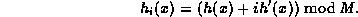
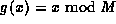
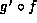
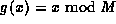
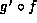
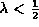

Data Structures and Algorithms
with Object-Oriented Design Patterns in Java
Data Structures and Algorithms
with Object-Oriented Design Patterns in JavaWhile quadratic probing does indeed eliminate the primary clustering problem, it places a restriction on the number of items that can be put in the table--the table must be less than half full. Double Hashing is yet another method of generating a probing sequence. It requires two distinct hash functions,
The probing sequence is then computed as follows

That is, the scatter tables is searched as follows:
Since the collision resolution function is c(i)=ih'(x), the probe sequence depends on the key as follows: If h'(x)=1, then the probing sequence for the key x is the same as linear probing. If h'(x)=2, the probing sequence examines every other array position. This works as long as M is not even.
Clearly since c(0)=0, the double hashing method satisfies property 1. Furthermore, property 2 is satisfied as long as h'(x) and M are relatively prime. Since h'(x) can take on any value between 1 and M-1, M must be a prime number.
But what is a suitable choice for the function h'?
Recall that h is defined as the composition of two functions,
 where .
We can define h' as the composition ,
where
where .
We can define h' as the composition ,
where
Double hashing reduces the occurrence of primary clustering
since it only does a linear search if h'(x) hashes to the value 1.
For a good hash function,
this should only happen with probability 1/(M-1).
However, for double hashing to work at all,
the size of the scatter table, M, must be a prime number.
Table  summarizes
the characteristics of the various open addressing probing sequences.
summarizes
the characteristics of the various open addressing probing sequences.
| probing sequence | primary clustering | capacity limit | size restriction |
| linear probing | yes | none | none |
| quadratic probing | no |  | M must be prime |
| double hashing | no | none | M must be prime |
 Copyright © 1998 by Bruno R. Preiss, P.Eng. All rights reserved.
Copyright © 1998 by Bruno R. Preiss, P.Eng. All rights reserved.